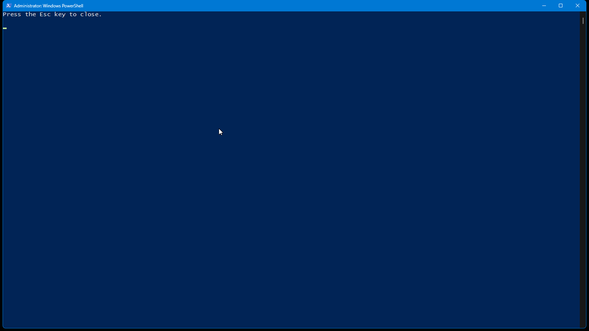

Random coordinates
The next position is generated independently for both axes using random values from 1 to 100.
Windows Utility
Mouse Jiggler is a lightweight Windows PowerShell utility that automatically repositions the mouse pointer every five seconds. It continues running until you press the Esc key.
Screenshot

Behavior
The current script creates a list of coordinate values from 1 through 100. Every five seconds it randomly chooses one value for X and one value for Y, then assigns those coordinates directly to the Windows mouse cursor.
The next position is generated independently for both axes using random values from 1 to 100.
Because those values are absolute screen coordinates rather than offsets from the current pointer position, the cursor repeatedly moves somewhere inside approximately the top-left 100 × 100-pixel area of the primary coordinate space.
The script tracks the time of the previous move and only changes the cursor position after at least five seconds have elapsed.
The main loop sleeps for 100 milliseconds between checks so it does not continuously spin at full CPU usage while waiting for the next move or Esc press.
Exit Control
The script imports the Windows GetAsyncKeyState function from user32.dll and checks the Escape key during each loop iteration. When Esc is detected as pressed, the loop ends and the PowerShell process can close.
How To Run
Transparency
The script loads System.Windows.Forms and changes Cursor.Position to move the pointer.
The native key-state helper is used specifically to test virtual key 0x1B, which is the Escape key.
The current PowerShell script contains no web request, upload, download, or network-communication code.
The script does not create a service, scheduled task, startup entry, registry autorun, or background installation. It runs only while its PowerShell process is active.
FAQ
Every five seconds while the script is running.
Press the Esc key.
No. The current script assigns a new absolute X/Y coordinate using random values from 1 through 100.
No. The current script changes cursor position only; it does not send mouse-click events.
No. It reads the Esc key state so it knows when to exit, but it does not generate keyboard input.
No. There is no persistence mechanism in the current script.